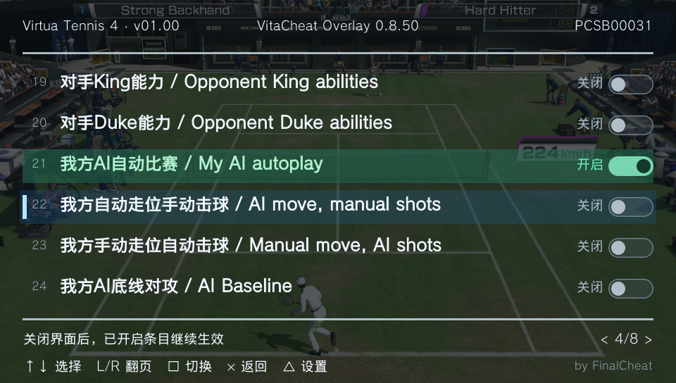

PLAYSTATION VITA · 最新项目
VitaCheat
Overlay.
让金手指，清晰呈现。
在游戏中呼出全屏列表，选择条目，按下方块。
熟悉的 .psv 代码，配上更好用的界面。
游戏内实拍

L+SELECT随时呼出
01
直接读取 .psv
共用 vitacheat/db，支持 UTF-8 与 GBK。
02
五种菜单语言
简中、繁中、英文、日文、韩文，或跟随系统。
03
按键操作，清晰切换
方块启停、L/R 翻页，透明度与呼出键可设置。
原版工具 · 保留下载
PSVITACHEAT Z06
原版工具与资料继续保留。使用旧版时，可从原有下载入口获取完整文件与用户手册。
Z06 为历史版本，原官网注明适用于 3.65 及以上系统。查看格式与版本差异